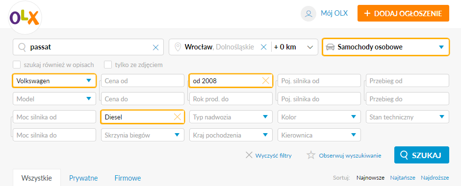
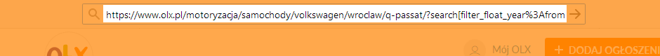
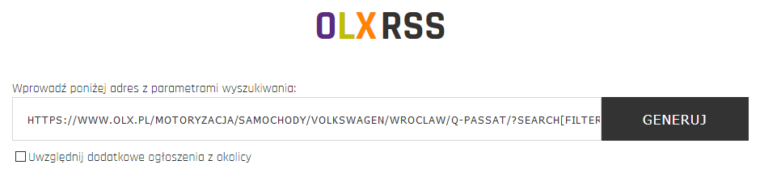
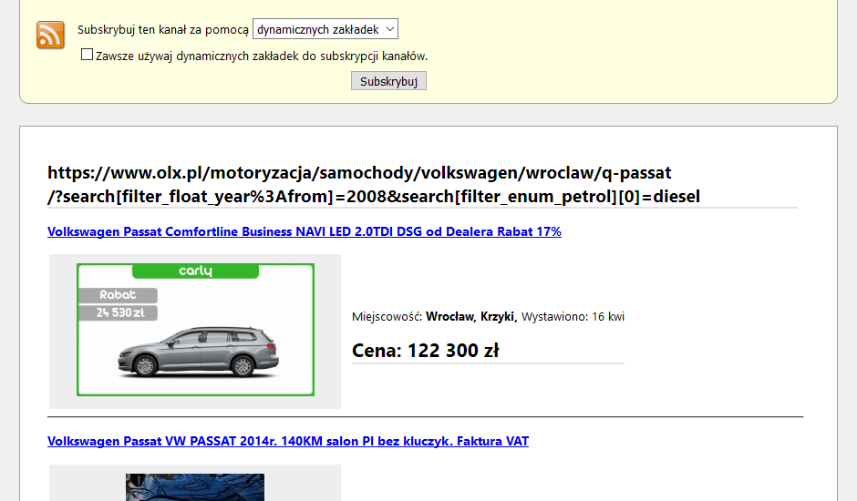

Co to jest?
OLX RSS jest generatorem kanału RSS do serwisu OLX.pl, który pozwala na spersonalizowanie wszystkich parametrów wyszukiwania.
Jak stworzyć kanał RSS?
- Wejdź w wybraną przez Ciebie kategorię na stronie OLX.pl i ustaw parametry wyszukiwania.
Ustaw sortowanie ogłoszeń po najnowszych, żeby śledzić najnowsze ogłoszenia w kanale RSS. W kanale RSS domyślnie wyświetlane są ogłoszenia z dwóch pierwszych podstron z wynikami.

- Przekopiuj link URL z pola adresu WWW przeglądarki. Powinny być w nim zamieszczone parametry wyszukiwania.

- Wprowadź adres do wskazanego pola na stronie internetowej skryptu i naciśnij przycisk "Generuj".

- Zostanie wygenerowany kanał RSS z ogłoszeniami o podanych parametrach wyszukiwaniach, jak w podanym adresie URL do serwisu OLX.pl.
